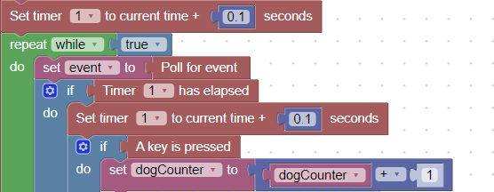

How to use a timer
Timers are useful when you need to slow down a particular behavior
There are 9 timers that are standard with this project
This code will set the first timer and then check if it has elapsed
Remember to set the timer again, after it has elapsed, otherwise it will stay elapsed

Note:The alternate way to slow down a task, is to place a wait block in the code
But this will slow down everything. A timer is a better use of the processing power of your computer